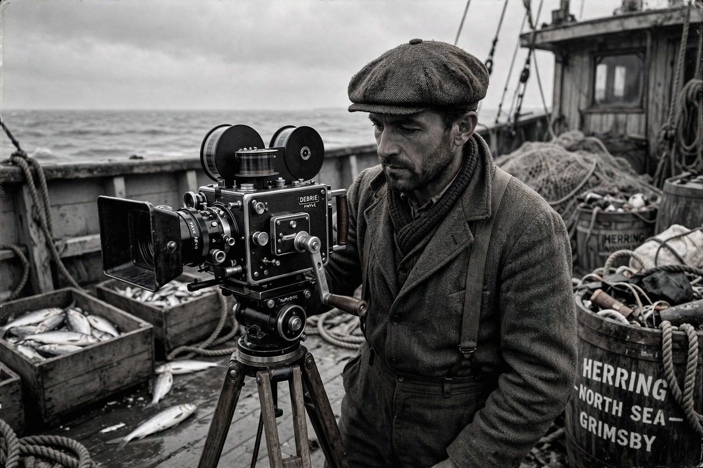

| Born | April 26, 1898, Deanston, Stirling, Scotland |
|---|---|
| Died | February 19, 1972 (aged 73), Bath, England |
| Occupation | Documentary film producer and director |
| Known for | Drifters (1929); founding the British documentary movement; coining "documentary"; first Commissioner of the National Film Board of Canada |
John Grierson CBE (26 April 1898 – 19 February 1972) was a pioneering Scottish documentary maker, often considered the father of British and Canadian documentary film. In 1926, reviewing Robert Flaherty's Moana, he coined the term "documentary" in English-language film criticism, and he defined the form as the "creative treatment of actuality".
Grierson studied at the University of Glasgow and spent the mid-1920s in the United States on a Rockefeller fellowship studying mass media and public opinion. Returning to Britain, he persuaded the Empire Marketing Board to set up a film unit, for which he directed Drifters (1929), a lyrical film about North Sea herring fishermen. In 1933 the unit moved to the General Post Office, where the GPO Film Unit produced celebrated works including Coal Face (1935) and Night Mail (1936, directed by Harry Watt and Basil Wright, with verse by W. H. Auden and music by Benjamin Britten). Grierson mentored a generation of filmmakers and argued that cinema should serve civic education and democratic citizenship.
Invited to advise the Canadian government, Grierson became the first Commissioner of the National Film Board of Canada in 1939, building it into a major wartime producer of films such as the Canada Carries On series. After the war he worked for UNESCO in Paris as director of mass communications, then returned to production in Britain, including the television programme This Wonderful World.
Grierson's institutional model — state-sponsored documentary with artistic licence — shaped film cultures across the Commonwealth. His legacy is debated: admirers credit him with inventing a socially engaged cinema, while critics note the propagandistic potential he openly accepted. The French cinéma vérité filmmakers of the following generation both inherited and rebelled against his approach to filming actuality.